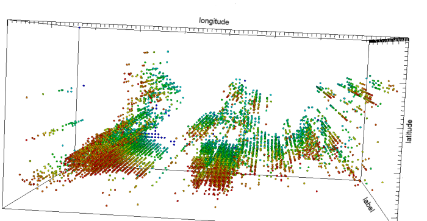
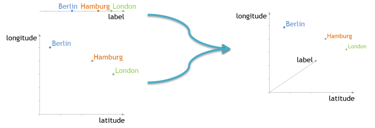

The Silk Link Discovery Engine builds the core of the Silk Framework. It is responsible for loading the instances from the data sources as well as generating the links based on the user-provided Link Specifications. This page covers the architecture of the Silk Link Discovery Engine as well as the Blocking method used in Silk.
The DataSource generates a stream of data items.
The optional Blocking phase partitions the incoming data items in clusters.
The Link Generation phase reads the incoming data items and computes a similarity value for each pair.
The incoming data items, which might be allocated to a cluster by the preceding blocking phase, are written to an internal cache.
From the cache, pairs of data items are generated. If blocking is disabled, this will generate the complete cartesian product of the two datasets.
If blocking is enabled, only data items from the same cluster are compared.
For each pair of data items, the link condition is evaluated, which computes a similarity value between 0.0 and 1.0.
Each pair generates a preliminary link with a confidence according to the similarity of the source and target data item.
The Filtering phase filters the incoming links in two stages:
In the first stage, all links with a lower confidence than the user-defined threshold are removed.
In the second stage, all links which originate from the same subject are grouped together.
If a link limit is defined, only the links with the highest confidence are forwarded to the output.
The number of links which are forwarded per source item, is specified by the link limit
Finally, the Output phase is responsible for writing the generated and filtered links to a user-defined destination.
As the Web of Data is growing fast there is an increasing need for link discovery tools which scale to very large datasets. A number of methods have been proposed to improve the efficiency of link discovery by dismissing definitive non-matches prior to comparison. The most well-known method to achieve this is known as blocking. Unfortunately, traditional blocking methods need a separate configuration and in general lead to a decrease of recall due to false dismissals.
Silk employs a novel blocking method which maps entities to a multidimensional index. The basic idea of the mapping function is that it preserves the distances of the entities i.e. similar entities will be located near to each other in the index space. Blocking works on arbitrary link specifications which aggregate multiple different similarity measures such as string, geographic or date similarity. No separate configuration is required as the indexing is directly based on the link specification and all parameters are configured automatically. Additionally, it guarantees that no false dismissals and thus no loss of recall can occur.
Blocking is organized in three phases: index generation, index aggregation and comparison pair generation.
For each similarity measure in the link specification, an index is built which consists of a set of vectors which define locations in the Euclidean space. The basic idea of the indexing method is that it preserves the distances of the entities i.e. similar entities will be located near each other in the index.
The specific indexing method which defines the number of index vectors which are generated per entity as well as their dimensionality depends on the data type of the field. For instance, for each numeric field a one-dimensional index is built and for each field which contains a geographic coordinate a two dimensional index is built using the latitude and longitude.In the index aggregation phase, all indexes which have been built in the index generation phase are aggregated into one compound index. The aggregation funtion preserves the property of the index that two entities within a given distance share the same index vector. Generally, aggregating the indexes of multiple similarity measures will lead to an increase in dimensionality, but the concrete aggregation function depends on the specific aggregation type. For instance, when aggregating an 2-dimensional geographic index and an 1-dimensional string index using an average aggregation, the resulting index will be 3-dimensional:
Finally, the comparison pair generation employs the index to generate the set of entitiy pairs which are potential links. These pairs are then evaluated using the link specification to compute the exact similarity and determine the actual links.